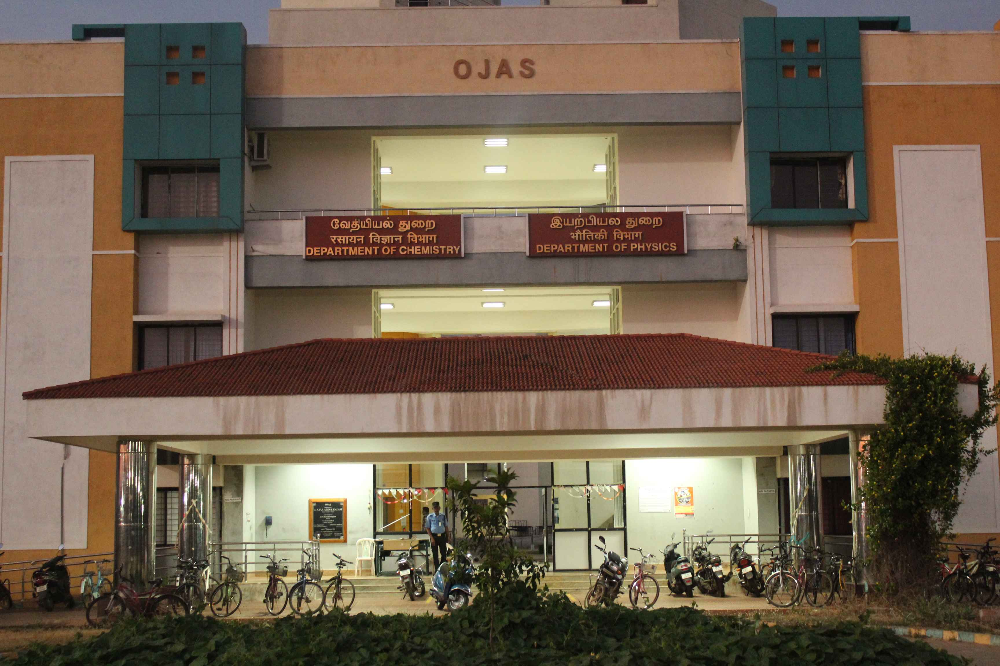

Our Department
Our department offers quality education, experienced faculty, modern labs, and strong research focus to prepare students for successful careers.
Computer Applications

Physics

To be a university globally trusted for technical excellence where learning and research integrate to sustain society and industry.
Visit us to know MoreNit Trichy offers B.Tech degrees in disciplines such as Chemical Engineering, Civil Engineering, Computer Science and Engineering, Electrical and Electronics Engineering, Electronics and Communication Engineering, Instrumentation and Control Engineering, Mechanical Engineering, Metallurgical and Materials Engineering, and Production Engineering.
Nit Trichy offers M.Tech programs in multiple specializations, as well as M.Arch, M.Sc., and M.A. degrees. Additionally, it has a highly reputed MBA program offered by the Department of Management Studies.
NIT Trichy offers extensive Ph.D. opportunities across all its departments, encouraging cutting-edge research in engineering, science, management, and humanities. The institute supports scholars with advanced facilities, experienced faculty, and a collaborative environment for impactful and innovative research contributions.
Our department offers quality education, experienced faculty, modern labs, and strong research focus to prepare students for successful careers.
Our facilities include a world-class library, advanced laboratories, high-speed internet, spacious hostels, modern classrooms, sports complexes, and a well-equipped gym.
Our library is a hub of knowledge with thousands of books, journals, and digital resources. It provides a quiet, well-equipped space for students and researchers to study, explore, and innovate.
The playground at NIT Trichy is expansive and well-maintained, supporting a variety of sports like football, cricket, and athletics. It fosters physical fitness, teamwork, and competitive spirit among students.
Our state-of-the-art gym features modern fitness equipment and experienced trainers. It encourages students to maintain physical health, build strength, relieve stress, and develop discipline as part of a balanced lifestyle.

NIT Trichy has provided me with an incredible learning environment and countless opportunities for growth. The faculty is supportive, and the campus facilities are top-notch. I’ve grown both academically and personally during my time here

The academic excellence and research focus at NIT Trichy pushed me to explore new ideas. The diverse student community and extracurricular activities made my journey enjoyable and fulfilling. It’s a place that truly shapes your future